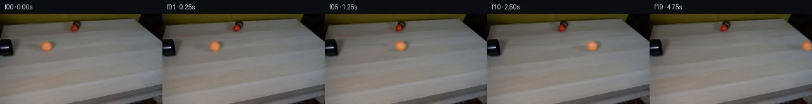
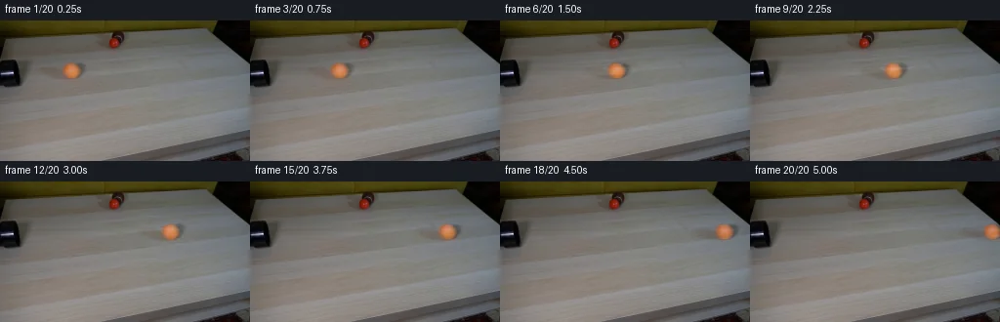
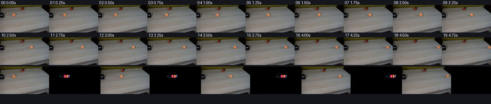

V0 · 初版 · 最终提交
![]()
Observable Generation Trace
把最终像素视频、Harness 冻结的每轮候选、真实工具事件和 Agent 自述放在同一页。可观测证据与模型自述分开标记，避免把“模型说它检查过”误当成真实工具调用。
![首帧]()
Static locked-off single-shot with fixed frame throughout filmed with constant framerate in real-time. The scene shows a realistic scientific demonstration. The scene only contains the described setup and actions. A light-colored wooden coffee table with a few small objects on it, including a brown tennis ball and a smaller red ball. The orange tennis ball rolls straight out of the black pipe over the entire table towards the right side.
首帧显示在左侧播放器初始画面。Track 权限、隔离和 tensor 一致性来自 run manifest，而不是 METHOD.md。
默认勾选初版和最终版；可选其他版本一起同步播放。仅检查图更新的连续重复快照已合并，回退旧视频仍保留为一次修订。
Observable events
来源：events.jsonl + run manifest
events.jsonl 可验证该 Agent 成功读取了 17 张 PNG；上面的 round 图不等同于读取次数，而是 Harness 独立冻结的候选。
Frozen candidates
每张图来自该 round 的真实 00 / 01 / 05 / 10 / 19 帧

pixels 9d51011505294714 · code b1355fac696f7ebb
--- previous/generate.py +++ current/generate.py @@ -0,0 +1,146 @@ +"""PixelWorld generation: orange tennis ball rolling straight right. + +Frame 0 is the untouched first_frame.png. Frames 1..19 are built by +translating the frame-0 ball/shadow residual sprite over a clean inpainted +table plate. Pure local numpy/scipy pixel operations; no external data. +""" +from pathlib import Path +import numpy as np +from PIL import Image +from scipy import ndimage + +from artifact_io import save + +CASE = Path(__file__).parent +H, W, N, FPS = 144, 256, 20, 4 +BALL_CENTER = (72.0, 51.0) # frame-0 ball center, pixels +SPEED = 9.21 # px per frame (36.8 px/s at 4 fps) + + +def build_plate_and_sprite(img): + """img: float64 RGB (144,256,3). Returns (plate, residual, alpha).""" + R, G, B = img[:, :, 0], img[:, :, 1], img[:, :, 2] + + # --- smooth per-row wood model from clean, near-neutral wood pixels --- + exclude = np.zeros((H, W), bool) + exclude[:, :26] = True # pipe + exclude[5:33, 102:136] = True # red + brown balls + exclude[:8, :] = True # wall / far edge + woodlike = ((R > 95) & (G > 85) & (B > 70) & + (np.abs(R - G) < 22) & ((R - B) < 45) & ~exclude) + base = np.zeros_like(img) + for y in range(H): + xs = np.where(woodlike[y])[0] + for c in range(3): + if len(xs) >= 10: + a, b = np.polyfit(xs, img[y, xs, c], 1) + else: + a, b = 0.0, np.median(img[y, :, c]) + base[y, :, c] = a * np.arange(W) + b + blum = 0.299 * base[:, :, 0] + 0.587 * base[:, :, 1] + 0.114 * base[:, :, 2] + lum = 0.299 * R + 0.587 * G + 0.114 * B + + # --- anomaly mask: ball + cast/motion shadow in the launch ROI --- + x0, x1, y0, y1 = 38, 100, 36, 66 + roi = np.zeros((H, W), bool) + roi[y0:y1, x0:x1] = True + Y, X = np.mgrid[0:H, 0:W] + dlum = blum - lum + warm = (R - G) - (base[:, :, 0] - base[:, :, 1]) + deep = (R - B) - (base[:, :, 0] - base[:, :, 2]) + anom = roi & ((dlum > 5) | (warm > 7) | (deep > 10)) + ball = ((X - 72) ** 2 / 12.0 ** 2 + (Y - 51) ** 2 / 9.5 ** 2) <= 1 + streak = ((X - 79) ** 2 / 17.0 ** 2 + (Y - 50) ** 2 / 6.5 ** 2) <= 1 + mask = (anom | ball | streak) & roi + labels, n = ndimage.label(mask) + keep = np.zeros_like(mask) + for i in range(1, n + 1): + ys, xs = np.where(labels == i) + if 40 < xs.mean() < 98 and 36 < ys.mean() < 64: + keep[labels == i] = True + mask = ndimage.binary_fill_holes(ndimage.binary_dilation(keep, iterations=1)) + + # --- clean plate: row-wise interpolation between clean borders --- + clean = ~mask + plate = img.copy() + for y in range(y0, y1): + xm = np.where(mask[y])[0] + if len(xm) == 0: + continue + xl = xm[0] - 1 + while xl >= 0 and not clean[y, xl]: + xl -= 1 + xr = xm[-1] + 1 + while xr < W and not clean[y, xr]: + xr += 1 + if xl < 0 or xr >= W: + continue + t = (xm - xl) / (xr - xl) + plate[y, xm] = (img[y, xl][None, :] * (1 - t)[:, None] + + img[y, xr][None, :] * t[:, None]) + + # low-frequency grain matched from clean rows 8..15 px away + soft = ndimage.gaussian_filter(img - plate, sigma=(1.2, 3.5, 0)) + for y, x in zip(*np.where(mask)): + vals = [] + for d in range(8, 16): + for yy in (y - d, y + d): … diff truncated; 59 more lines …
Final visual checks
Harness 保存的最终产物


Agent claims
以下文字由生成 Agent 撰写，不等同于工具证据
first_frame.png, 256×144)Static locked-off camera, light wooden coffee table, mustard-yellow wall behind, dark background top-right, black pipe protruding from the left edge.
| Object | Position (x, y) | Size / notes | |---|---|---| | Black pipe mouth | x 0–22, y ~39–66 | dark cylinder, rim highlight at x ~8, y ~52 | | Orange tennis ball (moving) | disk x ~63–80, y ~43–58; center (72, 51) | radius ~7–8 px, soft edge; darker contact shadow blob immediately to its right (x ~80–92, y ~44–55); faint elongated shadow streak extends left (x ~37–64, y ~45–52) | | Small red ball | center ~(115, 22) | radius ~6 px, specular highlight | | Brown ball (with white seam) | center ~(120, 14) | radius ~7 px, behind/above the red ball; static | | Table far edge | y ~8–17 | top-right corner at ~(211, 8) | | Table near edge | y ~118–140 | exits bottom of frame | | Table surface at ball height | y 43–58: wood grain runs across x 0→255 (gradually cooler/darker toward the right edge, ~RGB 120 → ~100), so a ball at constant y = 51 stays on the tabletop all the way to the right frame border |
Lighting comes from upper-left: ball shading brightest upper-left of the disk, cast/contact shadow sits to the right.
Prompt: "The orange tennis ball rolls straight out of the black pipe over the entire table towards the right side."
first_frame.png. Subsequent frames reuse the exact frame-0 ball+shadow sprite (extracted residual over an inpainted clean plate), translated with sub-pixel (linear) accuracy, so motion blur / contact shadow appearance stays consistent with frame 0.| Frame | t (s) | ball center x | Frame | t (s) | ball center x |
|---|---|---|---|---|---|
| 00 | 0.00 | 72.0 | 10 | 2.50 | 164.1 |
| 01 | 0.25 | 81.2 | 11 | 2.75 | 173.3 |
| 02 | 0.50 | 90.4 | 12 | 3.00 | 182.5 |
| 03 | 0.75 | 99.6 | 13 | 3.25 | 191.7 |
| 04 | 1.00 | 108.8 | 14 | 3.50 | 200.9 |
| 05 | 1.25 | 118.1 | 15 | 3.75 | 210.2 |
| 06 | 1.50 | 127.3 | 16 | 4.00 | 219.4 |
| 07 | 1.75 | 136.5 | 17 | 4.25 | 228.6 |
| 08 | 2.00 | 145.7 | 18 | 4.50 | 237.8 |
| 09 | 2.25 | 154.9 | 19 | 4.75 | 247.0 |
No collisions: the ball's lane (y ≈ 51) passes well below the red/brown balls near the far edge (y 14–22), so those remain untouched.
frame0 − plate with a Gaussian-feathered alpha (support x 35–98, y 33–66).v·t (sub-pixel linear weights in x, no y shift). Frame 0 = original PNG untouched.Continue first_frame.png into 20 frames (256×144, 4 fps, 5 s) showing the
orange tennis ball rolling straight out of the black pipe across the table
toward the right side. Camera, lighting and the red/brown balls are static;
only the orange ball moves.
All work is local Python pixel math with numpy, scipy.ndimage and Pillow
(generate.py). No external images, models or engines.
residual = frame0 − plate is kept over its support (x 33–100, y 31–67) with
an alpha mask = dilated |residual| > 5, Gaussian-smoothed (σ 0.7), thresholded
at 0.03. The sprite contains the orange ball, its dark right-side contact/
cast shadow and the faint leftward streak exactly as they appear in frame 0,
so every generated frame matches the source appearance.
(72 + 9.21·t, 51) for frame t
(9.21 px/frame = 36.8 px/s); size and shading stay constant. The lane at
y ≈ 51 stays on the tabletop all the way to the right border (verified by
pixel sampling), and passes well below the static red/brown balls, so
nothing collides or reacts.plate + α·residual, clipped to 0–255) with sub-pixel placement via linear
blending of two integer x-shifts; no y shift.first_frame.png untouched.artifact_io.save: pixels.npz
(uint32 0xRRGGBB, shape 144×256×20), frames/00..19.png,
inspection.png, and the standalone index.html player.frames/00.png is pixel-identical to first_frame.png.pixels.npz (checked programmatically for every frame).transition_check.png) show a single compact moving footprint with no
background drift, duplicated ghost balls, or static-object changes.inspection.png, full-frame montage, and
zoomed crops of the ball and the right table edge): the ball keeps its
color/shadow appearance across the cooler right side of the table and exits
the right frame border while still on the wood.